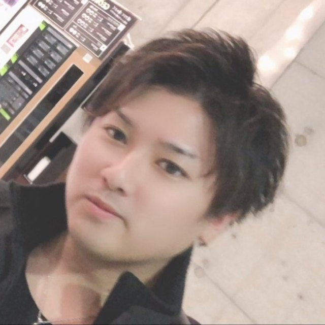

PROPERTY MANAGEMENT
商業施設の運営 5年
テナントリーシング、賃貸借契約、販促企画、施設管理、テナントリレーション、地域連携。

The Crew
イベント担当
走る楽しさの、その先へ。ドライブの目的地から、新たな出会いが生まれる場所へ。
双日グループの子会社が運営する商業施設にて、プロパティマネジメント（PM）業務に5年間従事。テナントリーシングや賃貸借契約、販促企画、施設管理、テナントリレーション、地域連携など、商業施設運営に関わる幅広い業務を経験してきました。
また、父が営んできた広告代理業を引き継ぎ、商業施設や行政、地域企業と連携した販促企画やイベントの企画・運営にも携わってきました。
一方、プライベートでは車をこよなく愛し、趣味の延長として車両売買にも取り組んできました。その経験から、ショッピングモールのように、車の展示・販売・買取・イベントなど、多彩なコンテンツが集まる新しいビジネスの形を構想してきました。
その実現に向けて選んだ場所が、関東・東北の双方から東北自動車道を利用してアクセスできる那須です。
「ドライブやツーリングの目的地として訪れ、愛車を眺めながら食事を楽しみ、車好き同士の新たな交流が生まれる場所」
そんな想いから、Daikoku Terraceの立ち上げを決意しました。
単なるカフェにとどまらず、カーイベントや車両売買、飲食、物販、地域との連携など、さまざまなコンテンツが共存する新しいカーライフの拠点を目指しています。
車種やジャンル、世代を問わず、車好きはもちろん、誰もが気軽に集まり、楽しめる場所を創り上げていきたいと考えています。
PROPERTY MANAGEMENT
テナントリーシング、賃貸借契約、販促企画、施設管理、テナントリレーション、地域連携。
PROMOTION & EVENTS
商業施設・行政・地域企業と連携した販促企画、イベントの企画・運営。
CAR LIFE
趣味の延長で車両売買に取り組み、車が主役の新しい集客拠点を構想。